BIOLOGY / AN INTERACTIVE FIELD GUIDE
让生命的规律，
在探索中显现。
为高中课堂设计的互动资源。
从一个分子，到一个种群；从一个问题，到一份证据。
选择适合学生的讲授方案，把课堂的主动权交给他们。
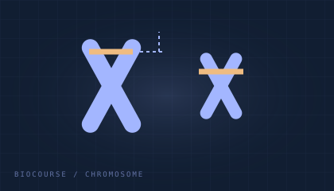
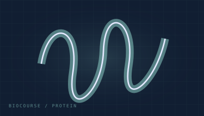
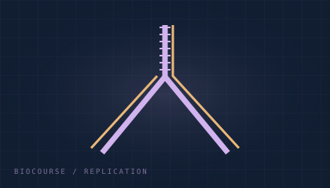
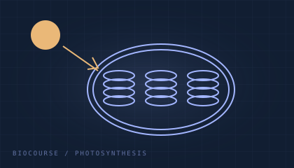
— 首页访客估算— 首页访问次数
北京时间 UTC+8 · 根据设备时钟换算
统计范围与隐私说明
首页访客为第三方不蒜子服务的估算值，不等于精确自然人数。课件次数按具体版本的实际页面载入统计，刷新会增加次数，目录读取不会增加次数；统计从接入时开始，无法追溯历史。服务接收访问地址和网络信息，可能保存本地访客标识。网络不可用时显示“—”。服务说明 ↗
THE COLLECTION / 课程资源库
每个主题，都有自己的探索方式。
WorkBuddy 版与原版并存。进入课件可切换版本、阅读功能说明和讲授建议，并查看同主题的课堂反馈。
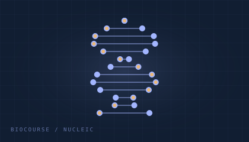
原版 / 1.0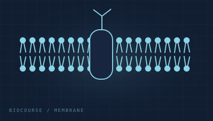
原版 / 1.0 WorkBuddy 版 / 2.0
WorkBuddy 版 / 2.0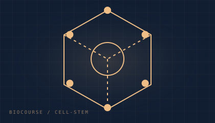
原版 / 1.0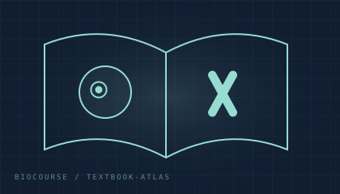
原版 / 1.0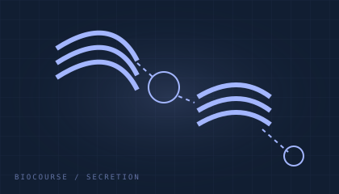
原版 / 1.1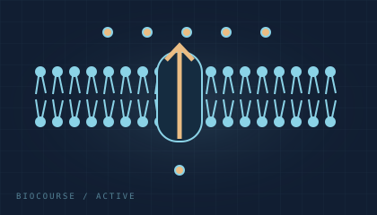
WorkBuddy 版 / 2.0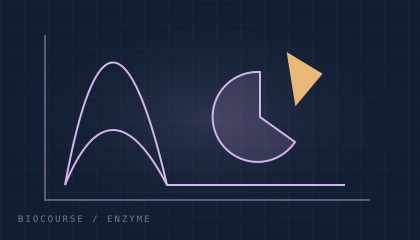
WorkBuddy 版 / 2.0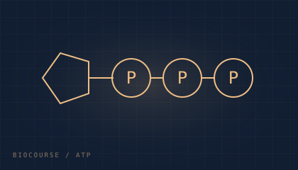
WorkBuddy 版 / 2.0.1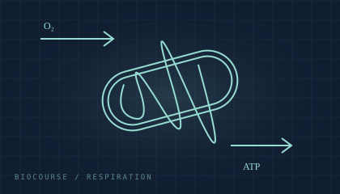
WorkBuddy 版 / 2.0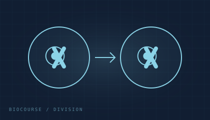
原版 / 1.0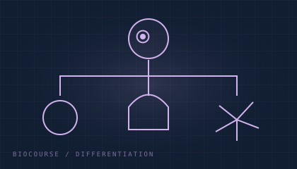
原版 / 1.0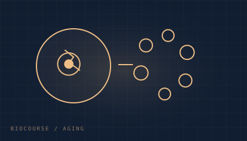
原版 / 1.0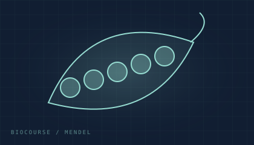
原版 / 1.0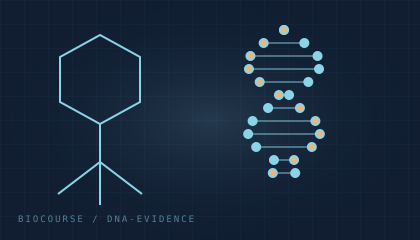
原版 / 2.0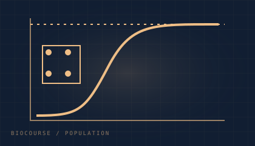
原版 / 1.0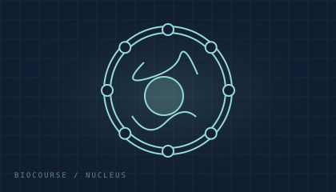
WorkBuddy 版 / 1.0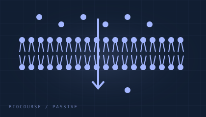
WorkBuddy 版 / 1.0暂未找到匹配主题，请调整关键词或课程模块。
COMMUNITY / 同行，让课堂更好
把课堂里的好问题，
带进我们的交流圈。
欢迎加入「生升不息教研群」，交流课件体验、教学灵感和学生提出的好问题。
使用微信扫码。手机端可保存图片后从微信扫一扫相册识别。若二维码提前失效，欢迎留言提醒更新。
二维码有效期读取中
CLASSROOM VOICES / 课堂声音
一起打磨更好的课堂
可直接阅读公开反馈及回复。发布仍需登录 GitHub 并确认，反馈会公开展示，请勿填写个人联系方式或学生身份信息。